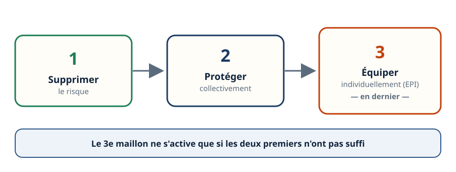
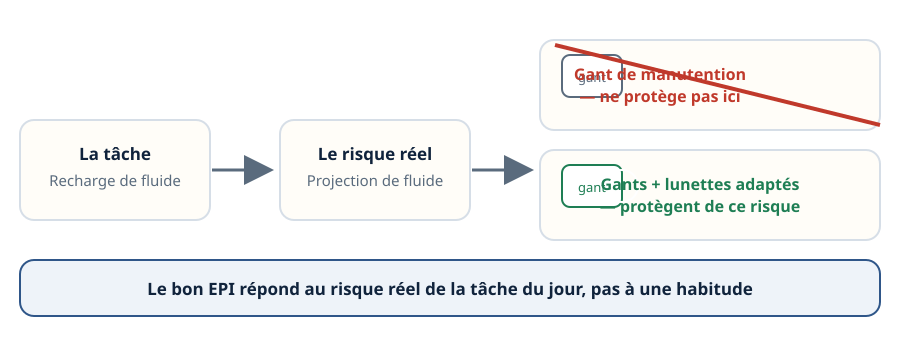
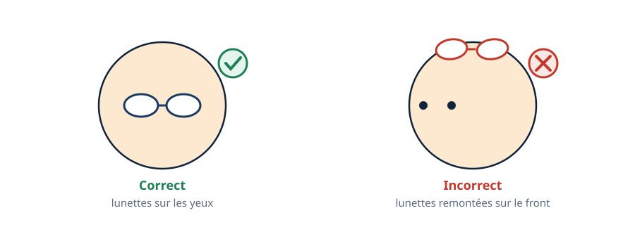
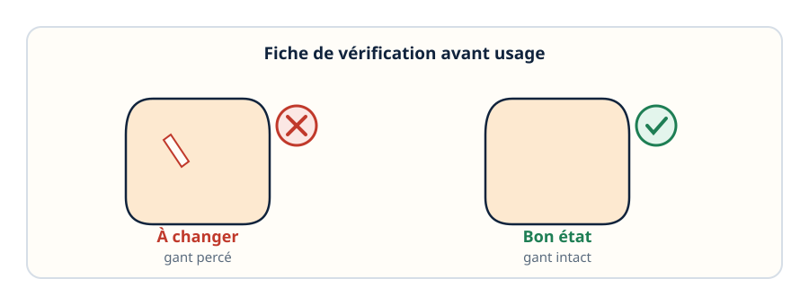
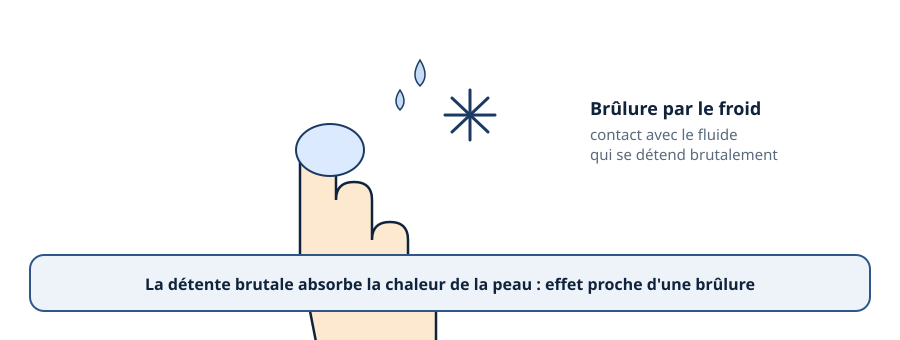
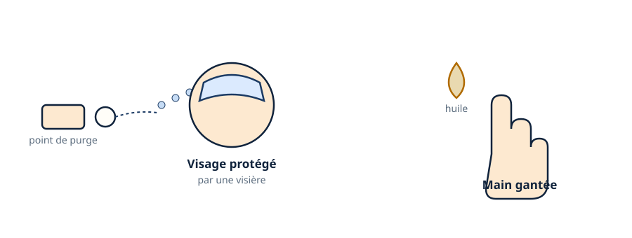
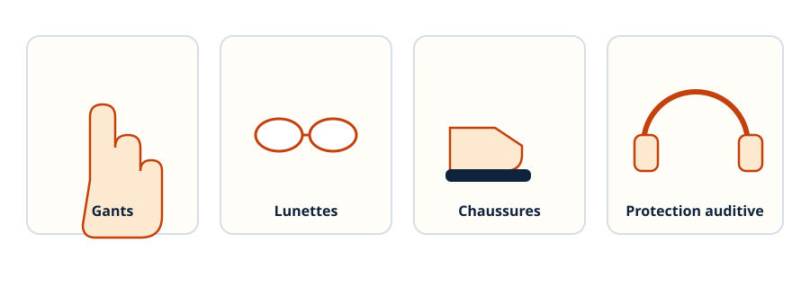
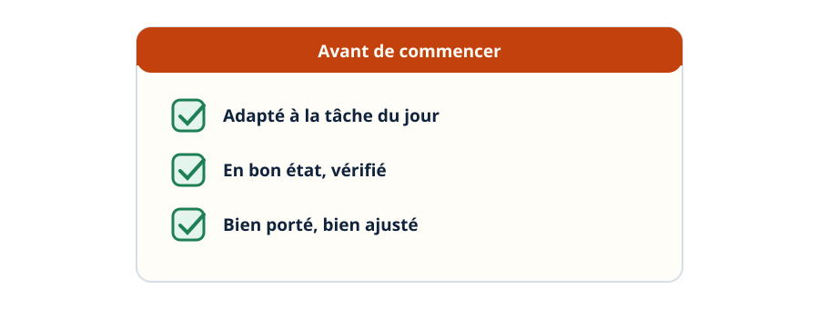

Les EPI — le dernier maillon, pas le premier réflexe
Mini-station commentée · 8 écrans et 4 questions · environ 10 minutes
Objectif
À la fin de la station, vous savez pourquoi l'équipement de protection individuelle vient en dernier dans la prévention, comment en choisir un adapté au risque réel de la tâche, comment le vérifier et le remplacer, et ce que le froid impose de spécifique : brûlure par le froid, projection de fluide, huile.
Chaque écran peut être expliqué à voix haute : le bouton « Écouter » commente ce que vous voyez. Rien n'est dit qui ne soit aussi écrit.
1 / 12
Écran 1 sur 8
L'EPI : le dernier maillon, pas le premier réflexe
Un équipement de protection individuelle (EPI) protège une seule personne à la fois : un gant, une paire de lunettes, une paire de chaussures. Ce n'est pas rien, mais ce n'est jamais la première réponse à un risque.
La prévention suit un ordre : supprimer le risque d'abord, le protéger collectivement ensuite — pour tout le monde en même temps —, et l'équipement individuel seulement en dernier, quand les deux premiers n'ont pas suffi ou n'étaient pas possibles.

Le troisième maillon ne s'active que si les deux premiers n'ont pas suffi.
Écran 2 sur 8
Choisir l'EPI adapté au risque réel
Un EPI ne se choisit pas par habitude : il se choisit selon le risque réel de la tâche du jour. Un gant de manutention protège les mains d'une coupure ou d'un écrasement — il ne protège ni d'une projection de fluide frigorigène, ni d'une brûlure par le froid.
Avant une tâche, la question est toujours la même : quel est le risque exact, et quel équipement le couvre vraiment ?

Le bon EPI répond au risque de la tâche, pas à une habitude.
Écran 3 sur 8
Porter : vérifier avant, ajuster correctement
Un EPI se vérifie avant chaque usage : son état, sa propreté. Il se porte correctement, pas approximativement — des lunettes remontées sur le front, un gant mal ajusté, ne protègent de rien.

Un EPI mal porté n'est plus un EPI.
Écran 4 sur 8
Vérifier et remplacer : un EPI abîmé se change
Un gant percé, une lunette rayée : ils se changent, ils ne se réparent pas. Un EPI abîmé n'offre plus la protection pour laquelle il a été choisi.

Abîmé, un EPI ne se répare pas — il se change.
Écran 5 sur 8
Ce que le froid impose : la brûlure par le froid
Un fluide frigorigène qui se détend brutalement s'évapore et absorbe la chaleur autour de lui — y compris celle de la peau. Le contact direct gèle la peau, un mécanisme dont les conséquences se rapprochent d'une brûlure thermique.

La détente brutale du fluide absorbe la chaleur de la peau.
Écran 6 sur 8
Ce que le froid impose : projection et huile
Une purge ou l'ouverture d'un circuit peuvent projeter du fluide liquide vers le visage ou les mains : d'où la protection oculaire et des gants adaptés. L'huile frigorigène récupérée, elle, est glissante et irritante au contact prolongé de la peau.

Deux risques distincts, deux protections adaptées.
Écran 7 sur 8
Les familles d'EPI du métier
Quatre familles reviennent sans cesse en froid et climatisation : des gants adaptés au risque froid, des lunettes ou un écran facial, des chaussures de sécurité, et une protection auditive pour les interventions bruyantes — près d'un compresseur ou d'un groupe en fonctionnement.

Quatre familles, quatre risques différents.
Écran 8 sur 8
Bilan et le réflexe
L'EPI est le dernier maillon de la prévention, jamais le premier réflexe.
Il se choisit selon le risque réel de la tâche, pas par habitude.
Il se vérifie avant chaque usage et se porte correctement.
Un EPI abîmé se remplace, il ne se répare pas.
Le froid impose des risques spécifiques : brûlure par le froid, projection de fluide, huile.
Le réflexe : avant de commencer, l'EPI est-il adapté à CETTE tâche, en bon état, bien porté ?

Trois questions à se poser avant de commencer.
Question 1 sur 4
Avant une intervention risquée, quel doit être le premier réflexe ?
Rappel de l'écran 1 — la chaîne à trois maillons.
Question 2 sur 4
Un technicien doit faire une recharge de fluide. Quel est le bon réflexe EPI ?
Rappel de l'écran 2 — le bon EPI répond au risque réel.
Question 3 sur 4
Un technicien trouve un gant percé dans son sac. Que doit-il faire ?
Rappel de l'écran 4 — abîmé, un EPI se change.
Question 4 sur 4
Pourquoi le contact avec un fluide qui se détend brutalement peut-il brûler la peau ?
Rappel de l'écran 5 — le mécanisme de la brûlure par le froid.
Les correspondances de la station
L'habilitation (sous-ligne Électrique) — la règle d'un côté, le geste protégé de l'autre.
Cette station est en préparation sur le plan du réseau.